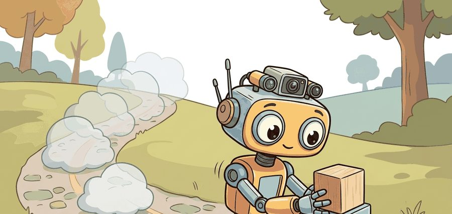
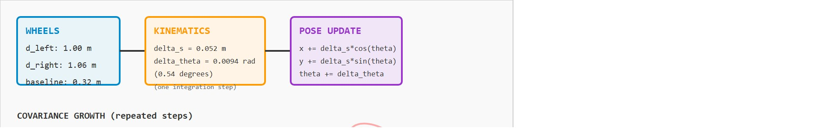
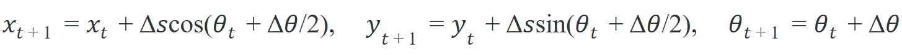

"Dead reckoning is useful because it admits how fast it is becoming unsure."
A Loop Closure That Came Back With Receipts

This section builds on the pose-estimation framing introduced in section 29.1. The motion model and covariance propagation derived here feed directly into the particle-filter localizer in section 29.3 and the factor-graph SLAM formulation in section 29.5. If you are already comfortable with kinematic motion models and uncertainty propagation, you can move ahead to section 29.3.
A delivery robot turns into a parking garage and instantly loses GPS. Its cameras see only concrete pillars. Yet it still knows, within centimeters, where it is: wheel encoders and an IMU have been silently integrating every turn and acceleration since the last known fix. That quiet bookkeeping is dead reckoning, and it is the backbone of every mobile robot deployed today. Modern autonomy stacks demand a pose estimate that is always available, not just when sensors cooperate. Here you will build the kinematic motion model, propagate uncertainty step by step, and see exactly how drift accumulates so you know when to trust the estimate and when to demand a correction.
Figure 29.2.1 sets up the running theme of this section: a visual idea only becomes useful state estimation once it is tied to a state variable, an uncertainty model, and the next robot action.
Blindfold a person, spin them once, and ask them to walk back to where they started: they will stride out confidently and end up meters off, never doubting a single step. A robot running on odometry alone is that blindfolded walker, because wheel ticks, Inertial Measurement Unit (IMU) integration, and visual motion increments keep producing a pose even when no map feature is visible, and the danger is that small bias accumulates without an external correction.
For a differential-drive base, where two independently powered wheels on a common axle set both speed and heading by how much each wheel turns relative to the other, wheel angular increments become a forward displacement and heading change. The covariance must grow with each integration step because uncertainty compounds. Dead reckoning serves as a short-horizon prediction, not a long-term truth source. A robot that knows only its best guess, and not how wrong that guess might be, navigates on hope rather than geometry. The numbers make the stakes concrete. A 1% heading bias hides in a single step. After 100 meters it produces roughly a 1-radian heading error and a position error on the order of the route length itself. This phenomenon is called unbounded open-loop drift, and every production system corrects it before it compounds. Figure 29.2.2 below traces this pipeline end to end: wheel measurements feed the kinematic update, which advances the pose, while the covariance ellipse grows step by step until heading error dominates.

An odometry result is incomplete without integration timestep, frame convention, calibration values, covariance model, and reset behavior. A smooth trajectory can still be wrong if it hides accumulating drift.
The belief that carries both drift and covariance forward is a chained motion posterior conditioned on wheel, leg, visual, or inertial increments. Its value is determined by how quickly uncertainty grows and by whether that growth is visible to the planner.
The equation below is the midpoint kinematic update introduced informally in Figure 29.2.2: it takes the forward displacement $\Delta s$ and heading change $\Delta\theta$ computed from wheel increments and advances the pose $(x_t, y_t, \theta_t)$ by one integration step, evaluating the direction of travel at the midpoint heading $\theta_t + \Delta\theta/2$ rather than at the start or end heading, which is what makes the update accurate to second order instead of first order.

The important evidence terms are wheel radius, slip, encoder quantization, IMU bias, integration timestep, and frame transform. Each term needs a residual or drift estimate because dead reckoning fails gradually before it fails obviously.
Covariance propagation matters because a robot tracking only its best-guess pose cannot decide when to trust that pose or ask for a correction. Without covariance, a planner never widens its safety margin as uncertainty grows, and a warehouse robot commits to a narrow aisle it no longer knows it can clear. A missing or frozen covariance is among the most common reasons a sensor-fusion stack silently accepts a stale pose.
The mechanism follows the linearized motion model. After each integration step, the update sets the new covariance $\Sigma_{t+1} = J_f \Sigma_t J_f^T + Q$, where $J_f$ is the Jacobian (the matrix of partial derivatives that gives the best linear approximation of the kinematic update near the current state) of the kinematic update with respect to the current state and $Q$ is a diagonal matrix of per-wheel or per-axis noise. Heading uncertainty grows faster than position uncertainty because heading error rotates every subsequent translation increment off-axis. A concrete illustration shows the gap. A 0.1-degree per-step heading bias stays invisible in the covariance after one step. After 200 steps across a 10-meter route, that same bias will typically rotate the robot's frame of reference enough to push the lateral position error past roughly 35 cm, though the exact figure depends on the specific motion profile and noise model used. A 0.1-meter constant position offset, by contrast, shifts the whole path by exactly 0.1 meter and nothing more.
So far: the covariance update $\Sigma_{t+1} = J_f \Sigma_t J_f^T + Q$ propagates uncertainty forward using the Jacobian of the kinematic model and a per-step noise term, and because heading error rotates every future translation off-axis, heading uncertainty compounds into position error much faster than a constant position offset ever would.
Think of heading error like a misaligned gun barrel: if you aim one degree off before each shot, the bullet still lands close to the target when the range is short. But as the range doubles, the lateral miss doubles too, and at long range even a tiny fixed angle puts you completely off the paper. Covariance propagation captures exactly this geometry: each new translation increment is fired from whatever angle the current heading estimate points, so a small constant bias in heading bends the entire future path sideways, while a small constant bias in position merely shifts the whole path over by a fixed amount. Heading uncertainty is the barrel alignment; position uncertainty is where you are standing.
A common assumption is that tiny per-step odometry errors keep the accumulated pose close to truth over long runs. That assumption is wrong. Dead reckoning errors are unbounded and compound multiplicatively, not additively. A heading bias of a fraction of a degree rotates every subsequent translation increment slightly off-axis. The lateral position error therefore grows with the square of the distance traveled, not linearly. Dead reckoning produces a valid short-horizon prediction with an explicitly growing covariance ellipse, not a ground-truth trajectory. Any plan whose covariance ellipse grows beyond navigation tolerances requires an external correction before the robot can trust it.
The covariance equations above tell you how drift should grow, but the only way to trust them is to run the kinematic update on a known increment and watch the heading error appear. Code Fragment 1 is the odometry unit test: integrate a known motion increment, inspect pose drift, then compare the hand result with the library or ROS node before trusting long routes.
# Integrate a differential-drive odometry increment.
# A small wheel mismatch creates a heading change that will compound.
import math
r = 0.05
baseline = 0.32
d_left = 1.00
d_right = 1.06
delta_s = r * (d_right + d_left) / 2.0
delta_theta = r * (d_right - d_left) / baseline
print(f"forward={delta_s:.3f} m")
print(f"heading_change={math.degrees(delta_theta):.2f} deg")Expected output interpretation. The forward increment is only about 5 cm, but it already carries a nonzero yaw error. That is the important readout: if the robot repeats this biased update for hundreds of steps, the translational error will grow mostly because the heading estimate keeps rotating the future motion in the wrong direction.
d_left, d_right) and the wheel baseline into a forward displacement delta_s and a heading change delta_theta. The heading change looks tiny for one update, but repeated bias bends the whole trajectory unless a later correction constrains it.Trace the midpoint kinematic update with concrete numbers. Start at pose $(x_0, y_0, \theta_0) = (0,\ 0,\ 0)$. Use a constant per-step increment of $\Delta s = 1.0$ m forward and $\Delta\theta = 0.20$ rad of heading change (a noticeable but small turn), applying $x \mathrel{+}= \Delta s\cos(\theta + \Delta\theta/2)$.
Step 1. Midpoint heading $= 0 + 0.20/2 = 0.10$ rad. $\cos(0.10) = 0.9950$, $\sin(0.10) = 0.0998$. So $x_1 = 0 + 1.0 \times 0.9950 = 0.995$, $y_1 = 0 + 1.0 \times 0.0998 = 0.0998$, $\theta_1 = 0 + 0.20 = 0.20$ rad.
Step 2. Midpoint heading $= 0.20 + 0.10 = 0.30$ rad. $\cos(0.30) = 0.9553$, $\sin(0.30) = 0.2955$. So $x_2 = 0.995 + 0.9553 = 1.950$, $y_2 = 0.0998 + 0.2955 = 0.395$, $\theta_2 = 0.40$ rad.
After two 1-meter steps the robot has traveled 2 m of arc length but is only at $(1.950,\ 0.395)$: the heading change has already curved the path. Notice $y$ grew from $0.0998$ to $0.395$, nearly quadrupling while $x$ grew by less than 1: that accelerating lateral component is exactly the off-axis drift the covariance must capture.
ROS 2 odometry messages, robot_localization, OpenVINS, and visual odometry modules absorb message formats, timestamp handling, and sensor fusion plumbing. Keep the two-line kinematic calculation as a unit test for frame direction and sign conventions.
Keep the dead-reckoning calculation small enough to audit by hand, then use robot_localization, Nav2 odometry sources, or a factor graph for deployment. The invariant is that motion increments and covariance grow in the expected frame.
When using the robot_localization Extended Kalman Filter (EKF) node on a ground robot (an EKF fuses multiple noisy sensor streams into one pose estimate by repeatedly predicting and correcting a linearized state), set two_d_mode: true in the node's YAML configuration. Without it the filter estimates all six degrees of freedom, and the 2D odometry covariance becomes poorly conditioned, producing visible jitter in the fused X/Y position even when the raw wheel odometry looks clean. Also set the odom0_differential flag to false if your odometry source already publishes absolute increments; leaving it at true double-differentiates the data and amplifies high-frequency noise. Both settings appear in the official ekf.yaml template but are easy to overlook when copying a minimal example.
Replay the same drive with biased wheel radius, injected slip, delayed IMU packets, and a wrong base-link transform as separate cases. The failure label should tell whether drift came from kinematics, timing, calibration, or terrain.
Wheel slip on polished warehouse floors or carpet edges is the most common silent killer of odometry. The encoder reports motion the wheel did not actually deliver, so the pose estimate advances while the robot stays behind. The symptom is not a spike or error message: the trajectory looks smooth, but the robot misses its waypoint by an amount that compounds with each turn. The fix is not a better odometry formula but a slip-aware covariance that widens lateral uncertainty whenever the commanded acceleration exceeds the floor's traction limit.
A warehouse odometry log should include encoder ticks, commanded velocity, IMU yaw rate, integrated pose, covariance growth, floor condition, and any scan-match correction. That record shows whether the robot drifted before perception had a chance to recover it.
Neural IMU preintegration. Classical IMU preintegration assumes a fixed noise model calibrated offline, but that model breaks under thermal drift and vibration. The DIDO line of work (Brossard et al., 2024, "Data-Driven IMU Denoising with Online Adaptation," ICRA 2024) replaces the fixed noise model with a lightweight learned denoiser that adapts in real time, cutting heading drift on legged robots by 30-50% without changing hardware or increasing compute beyond what a Jetson Orin can sustain.
Foundation-model visual odometry. MASt3R (Duisterhof et al., 2024, ETH Zurich / Meta AI) and its successors treat pairs of uncalibrated images as a regression target for 3D point maps and relative poses simultaneously, bypassing classical feature extraction entirely. On the Boreas autonomous-driving dataset the approach generalizes across seasons and sensor degradation conditions where classical ORB-SLAM3 fails to initialize, suggesting that pretrained scene representations can replace hand-crafted odometry pipelines in out-of-distribution environments.
Odometry from event cameras. Event cameras (e.g., the Prophesee EVK4) report per-pixel brightness changes at microsecond resolution and produce near-zero motion blur at 200+ mph, a regime where frame cameras fail. The ESVIO work (Chen et al., 2024, RSS 2024) fuses event streams with a standard IMU to achieve sub-0.5% relative error on aggressive drone maneuvers where conventional VIO systems lose tracking entirely.
Open problem for PhD students. All three directions above assume a robot that moves continuously and collects dense sensor streams. The unsolved case is intermittent-motion odometry: a robot that stops for minutes (package delivery, inspection dwell), during which IMU bias walks and thermal drift corrupts camera-IMU extrinsics. No current method reliably recovers a tight pose estimate after a multi-minute standstill without a map feature for re-localization. A tractable thesis contribution would be an adaptive preintegration scheme that detects zero-velocity intervals, freezes bias estimates, monitors extrinsic drift via temperature proxies, and re-initializes cleanly when motion resumes, validated on a legged robot doing stop-and-inspect traversals over a 500-meter outdoor route.
Consider a specific case: the Amazon Kiva warehouse robot (now Amazon Robotics) uses a combination of floor QR-code landmarks and wheel odometry. In the intervals between landmark reads, pure wheel odometry on a differential-drive base accumulates roughly 1-2% of distance traveled as heading error on clean floors. Over a 10-meter straight run that is 10-20 cm of lateral deviation, enough to miss a shelf slot by half a pod width. The landmark correction fires every 1-3 meters and resets that error before it compounds. Without corrections, the same 1% heading bias repeated over a 100-meter route produces roughly a 1-radian heading error and a position error on the order of the route length itself, which is why dead reckoning alone is never used as a long-horizon pose source in production systems.
NASA's Perseverance rover cannot trust wheel odometry on loose Martian sand, where slip can exceed 100% on dunes, so it runs visual odometry: it stops, snaps stereo images, tracks surface features between frames, and computes its true displacement geometrically. This dead-reckoning-by-vision is what lets ground controllers verify the rover actually moved the commanded distance before sending the next drive, since a wheel-only estimate could report meters of progress while the rover spun in place.
Dead reckoning is useful because it admits how fast it is becoming unsure.
Can you state the state variables, observation residual, uncertainty representation, replay artifact, and most likely field failure for odometry and dead reckoning? If one field is vague, the estimator is not ready for embodied use.
Odometry and dead reckoning is production-ready only when geometry, uncertainty, timing, and action consequences are tested together.
Use one nominal square path and one path with a biased wheel radius or slip segment. Report final pose error, heading drift, covariance growth, and whether the planner would still accept the route.
Goal: Feel how a tiny, constant odometry bias turns into unbounded position error, and confirm that lateral error grows faster than linearly with distance.
Tools needed: Python with NumPy and Matplotlib (15-30 minutes). No robot or ROS required; a single script suffices. Optionally upgrade to a TurtleBot3 in Gazebo if you want a physics-based slip model.
Setup: Implement the midpoint kinematic update from this section. Drive a perfect straight line by feeding equal left and right wheel increments for 200 steps of 0.05 m each (a 10 m route). Then inject a fixed multiplicative bias on the right wheel (for example, scale $d_{right}$ by 1.01, a 1% error) and replay the same commands.
What to vary: Sweep the wheel-bias factor over $\{1.001, 1.005, 1.01, 1.02\}$ and the route length over $\{10, 50, 100\}$ m. Optionally add zero-mean Gaussian noise to each increment to compare systematic bias against random noise.
What to observe: Plot the true path against each biased path, and plot final lateral error versus route length on log-log axes. Confirm that the systematic-bias error scales roughly with distance squared (slope near 2), while pure zero-mean noise grows only with the square root of the number of steps. This is the empirical signature of why a smooth-looking trajectory can still be badly wrong without an external correction.
Beginner (weekend): Build a differential-drive odometry simulator in Python using Gymnasium: implement the kinematic update equations from this section, inject a small wheel-radius bias, and plot how the covariance ellipse grows over a 50-meter simulated run. The key challenge is wiring the covariance propagation correctly so the ellipse visibly expands along the heading direction rather than growing uniformly.
Intermediate (1-2 weeks): Use ROS2 and the robot_localization EKF node with a simulated TurtleBot3 in Gazebo to compare three odometry correction strategies: no correction, periodic GNSS fix injection, and scan-match corrections from a 2D lidar. Publish all three covariance traces to a single RViz panel and log the final pose error at a 100-meter waypoint. The key challenge is correctly configuring the odom0_differential and two_d_mode flags so the EKF fuses sources without double-differentiating the odometry data.
Continue to Section 29.3: Localization with particle filters, where this state-estimation contract becomes the input to the next embodied capability.
Durrant-Whyte, H. and Bailey, T. "Simultaneous Localization and Mapping." IEEE Robotics and Automation Magazine, 2006. https://ieeexplore.ieee.org/document/1638022
Classic SLAM tutorial that frames the estimation problem and the role of uncertainty.
GTSAM Project. "Factor Graphs and GTSAM." Official documentation. https://gtsam.org/
Primary tool reference for factor graphs, smoothing, pose graphs, and robotics estimation examples.
ROS 2 Navigation Project. "Nav2 documentation." Official documentation. https://navigation.ros.org/
Primary documentation for integrating localization, maps, planners, controllers, behavior trees, and recoveries.